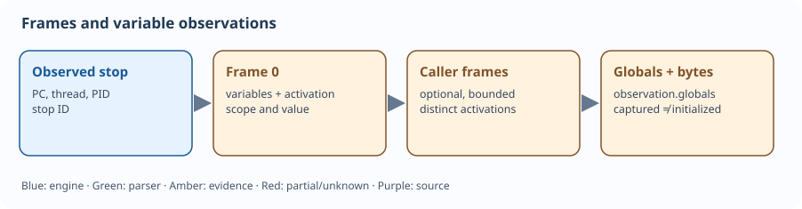

Stack frames, variables and raw memory #
Level 1 · Intuition #
A displayed debugger value is an observation made at one stopped moment, not a proof of C-language initialization. Visual C records where a variable lived, what GDB could display, whether bytes were actually read, and which limits prevented a fuller read. Function calls introduce new frame activations; two locals named n in different recursive calls are not the same variable.


Level 2 · At a stopped checkpoint #
A ExecutionSnapshot has variables for frame 0 and a bounded optional caller_frames vector of FrameVariables. Globals/file statics live in snapshot.observation.globals. The stack itself is call_stack: Vec<StackFrameInfo>: frame level=0 is innermost, while caller_frames vector position is not a GDB level. Per-thread activation IDs and lexical scope IDs distinguish shadowing across calls. With GDB's embedded Python support, lexical block bounds and Symbol.value(frame) aid identity and correct shadowed-variable reads; unavailable probes use explicitly qualified fallback identity. Scope activity alone never means a declaration's initializer has executed.
VariableInfo.address is the address of the variable's storage. For a pointer, points_to is the stored target address. target.address_match_allocation_id is only a numeric containment candidate. Reused addresses are ambiguous; pointer provenance must not be inferred from a current address match. read_status describes GDB's displayed value, bytes_status the byte capture, memory_evidence requested/captured/extent/status, and initialization_status is a separate (often unknown) dimension. A raw_bytes_hex prefix can be valid with an explicitly unobserved tail; unobserved does not necessarily mean unreadable. Optional per-instruction --memory-region reads are exact only at their own recorded instruction stop; earlier checkpoint bytes are last-known elsewhere.
Worked call #
// Illustrative C; see fixtures/c/recursive.c for the real tested fixture.
int recurse(int value) {
if (value == 0) return 1;
return value * recurse(value - 1);
}When recurse(3) calls recurse(2), the second frame has a distinct activation. The audited engine trace with limits.max_caller_frames=3 captured 45 caller-frame entries across 26 snapshots, not an unlimited call history. Each checkpoint is a historical observation: later returns/frees must not mutate earlier captures. The TP-7 frame activation query only resolves within one retained snapshot.
Level 3 · Where to look #
src/gdb_mi.rsextractsStackFrameInfo,RawVariableand bounded GDB reads;src/trace.rs::push_snapshotcollects checkpoint state, heap blocks and caller frames.src/memory.rsenriches byte/target observations;src/recorder.rs::set_validitykeeps display/byte status distinct.src/dwarf.rs::associatecorrelates unique declarations without replacing GDB values.src/models.rs::{ExecutionSnapshot, SnapshotObservation, VariableInfo, MemoryEvidence, FrameVariables, ScopeStatus, DataValidity}is the schema;src/trace_parser/semantic.rs::MemoryEvidenceViewqualifies captured byte ranges without decoding C semantics.
{"name":"sum","value":"10","raw_bytes_hex":"0a000000","read_status":"valid","bytes_status":"valid"}This is an abridged excerpt of the audited phase8b_defined.c:15 variable, not a stand-alone VariableInfo document. Four readable bytes show a captured representation of 10, not a proof of prior initialization. Consult data model and confidence.